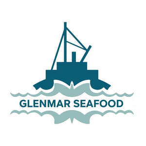

Trade Mark Journal No.2025/052 26 December 2025
UK00004310574 15 December 2025 (29,31)

- Class 29
- Seafood; Cooked seafood; Canned seafood; Tinned seafood; Frozen seafood; Seafood jellies; Seafood products; Fish, seafood and molluscs spreads; Processed seafood; Dried seafood; Seafood preserves; Seafood paste; Seafood extracts; Seafood spread; Fish, seafood and molluscs, not live; Steaks of fish; Fish steaks; Tuna fish; Processed seafood products; Dishes of fish; Salted and fermented seafood (jeotgal); Fish steak; Sea salmon roe for food; Crab meat; Cooked fish; Fish; Fish croquettes; Fish sausages; Frozen shellfish; Grilled fish fillets; Tagine [prepared meat, fish or vegetable dish]; Tuna fish [preserved]; Sea trout roe for food; Foods prepared from fish; Prepared fish dishes; Seafood [not live]; Seafood, not live; Food products made from fish; Fish (Food products made from -); Fish-based snack food; Pickled fish; Frozen cooked fish; Frozen appetizers consisting primarily of seafood; Fish-based foodstuffs; Canned fish; Fish, canned; Foods made from fish; Fish cakes; Seafoods boiled down in soy sauce (tsukudani); Salmon croquettes; Fish products being frozen; Sashimi; Coconut shrimp; Prepared entrees consisting primarily of seafood; Soy sauce marinated crab (Ganjang-gejang); Smoked fish; Tinned fish; Fish, tinned; Salted fish; Fish (Salted -); Fish fillets; Fillets (Fish -); Frozen pre-packaged entrees consisting primarily of seafood; Frozen fish; Salmon caviar; Tuna fish [not live]; Tuna fish, not live; Fish jellies; Bottled fish; Bottled fish products; Imitation crab meat; Processed fish roe; Fish roe, prepared; Crab; Mousses (Fish -); Fish mousses.
- Class 31
- Live seafood; Brine shrimp for fish food; Shellfish, live; Live shellfish.
Glenmar Seafood UK Ltd